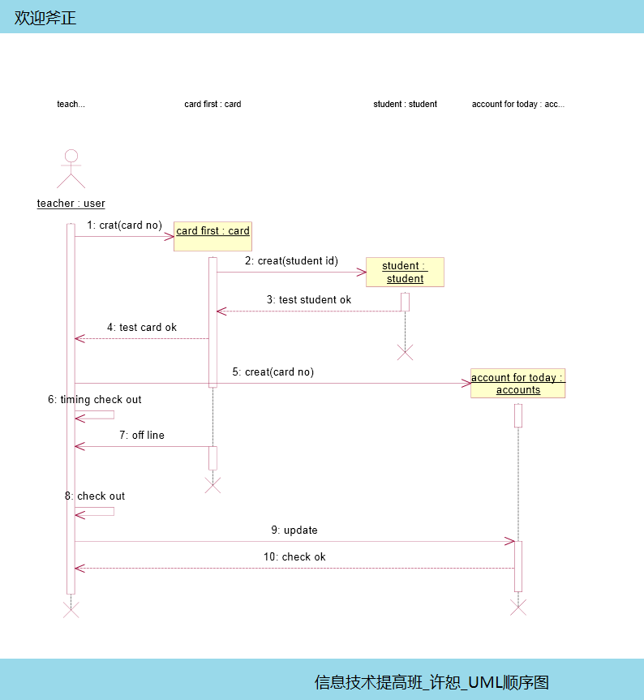
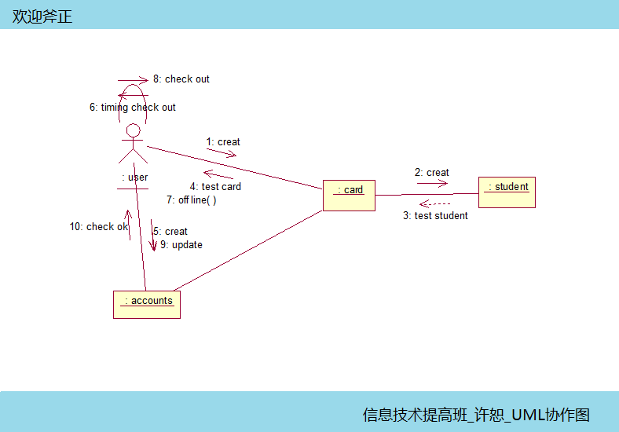
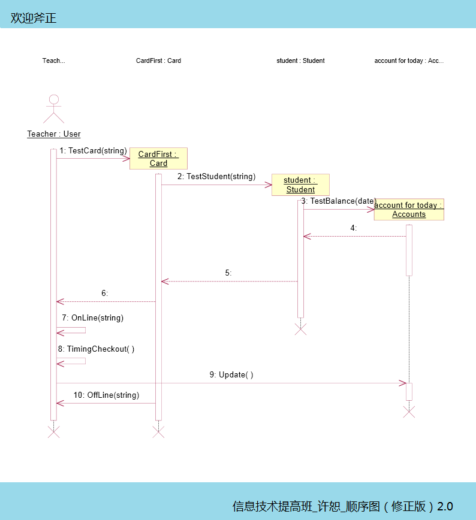

在前几篇博客中，已经基本从动态和静态了解了这个系统，在今天这篇博客中，交互图让我们把以前所做所想真真正正地编程一个个对象，透过他们看看我们的系统是怎样将类与系统行为联系在一起！
基本上做完这个图UML就接近尾声了，在这幅图上我们要尽可能地接近代码，接近现实！作为初学者，对象与类的严格对应要尽可能完成！消息的理解也许并不是太能透彻，但是要有这个过程！
几幅图画完我感到UML比我想象的要有点难度，每个图的完成有其必不可少的成分，每个细节的掌握也并不那么容易，但是我发现他的简单之处，就是他的图形并不是多么复杂，图形不多，关系不乱，正是因为它的简单所以早就了它的通用，也这是因为它的通用，让全世界收益！
有人说过，音乐是全世界的语言，无论他来自哪里，听到美妙的音乐都会喜悦，UML把图形变成了世界的语言，老师说过，一幅图抵得上千言万语，UML正是这样的工具！
以下是我针对机房收费系统画的图，请大家斧正：


后期修正版：
